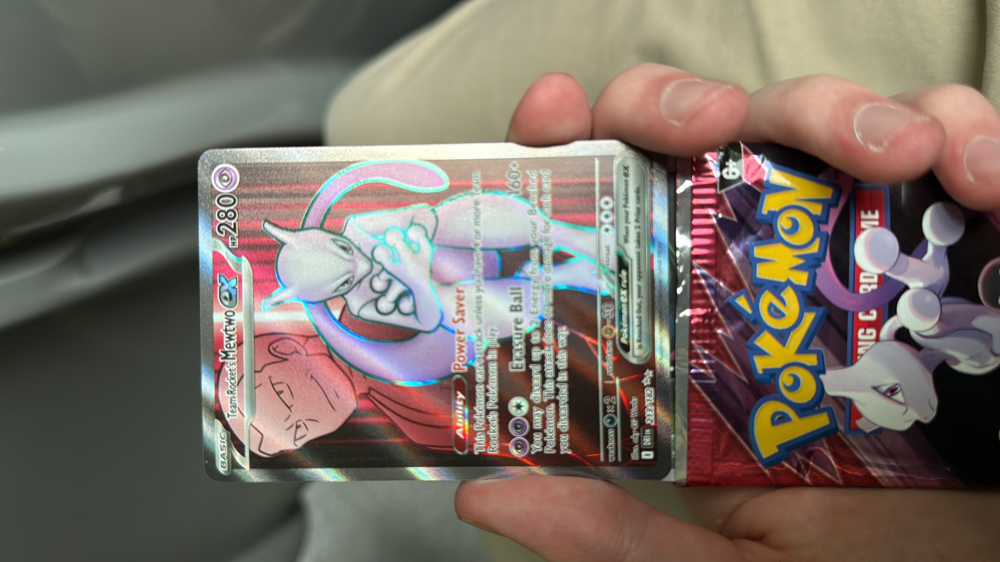

Voor dit persoonlijke project ben ik begonnen met het hunten van de Mewtwo-kaart in Pokémon Rivals. Dit deed ik vooral omdat het me interesseerde en omdat ik het leuk vond om hier in mijn vrije tijd mee bezig te zijn. Er zat geen vaste aanpak of specifieke strategie achter, het ging vooral om het proces en het doorzetten. De grootste uitdaging was het geduldig blijven, aangezien hunten vaak herhalend is en geen directe vooruitgang laat zien. Toch bleef ik ermee bezig omdat ik het leuk vond en omdat het voor mij een manier was om even te ontspannen naast andere projecten.
Tags: #Charizard #pokemon